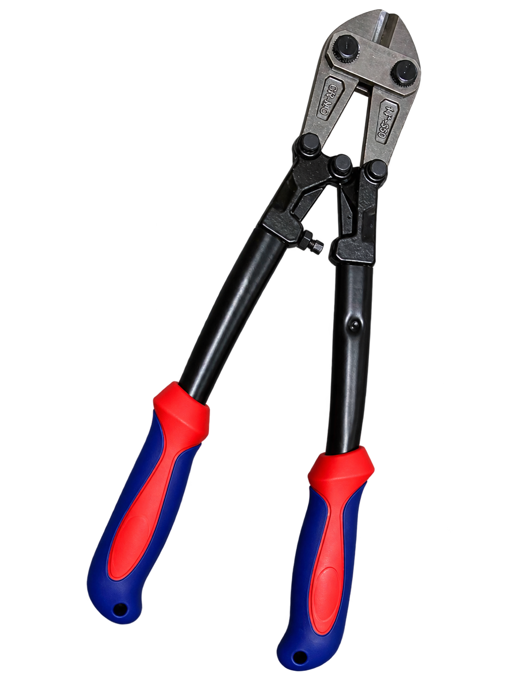
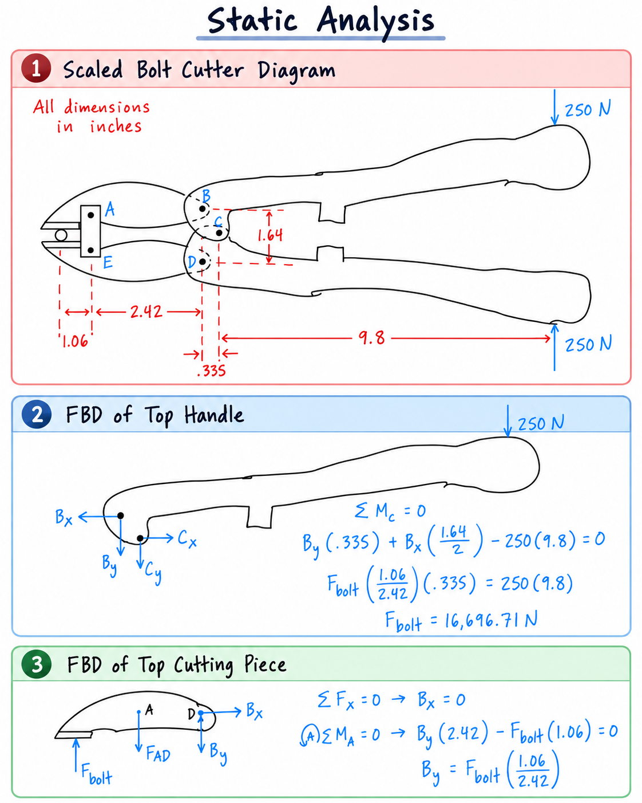

Project Overview
This project analyzed a physical bolt cutter using engineering measurements, CAD modeling, free-body diagrams, and static equilibrium to determine how the mechanism amplifies human input force at the cutting blade.
Physical Bolt Cutter
The project began by examining and measuring the actual bolt cutter. These measurements were used to identify important pivot locations, understand the linkage geometry, create the SolidWorks model, and perform the static analysis.

Key Results
The analysis quantified the mechanical advantage generated by the bolt cutter's handles, pivot points, and linkage geometry.
Engineering Problem
Bolt cutters use long handles and a multi-pivot linkage system to generate mechanical advantage. A relatively small force applied by the user creates torque about the pivots, which is transmitted through the linkage system and concentrated at the cutting jaws.
The objective of the analysis was to determine the force generated at the cutting blade when a realistic human input force was applied to the handles.
How the Mechanism Works
Several mechanical elements work together to transfer and amplify the user's input force.
Handles & Pivots
The long handles create a large moment about the primary pivot. Pivot joints connect the handles to the linkage system while allowing rotational motion and transmitting force through the tool.
Linkages & Cutting Jaws
The linkage system transfers the handle force toward the jaws. The cutting blades then concentrate the amplified force over a small contact area to shear through material.
Analysis Workflow
The project combined physical measurements, CAD modeling, free-body diagrams, and static equilibrium equations.
Measure
Measured the geometry of the physical bolt cutter and identified critical dimensions and pivot locations.
Model
Created SolidWorks parts, engineering drawings, and a complete assembly based on the measured geometry.
Analyze
Constructed free-body diagrams of the handle and cutting components to determine forces and reaction loads.
Solve
Applied static equilibrium equations to calculate the force transmitted to the cutting blade.
Analysis Assumptions
The physical mechanism was simplified using standard statics assumptions so its force transmission could be analyzed.
A 250 N human-applied force was assumed at the handles during the static analysis.
The handles, jaws, and linkages were treated as rigid bodies with no deformation.
Pivot locations were treated as frictionless pin connections to simplify force transmission through the mechanism.
The input forces were represented as concentrated loads applied at defined positions on the handles.
Static Analysis
A scaled diagram was used to identify the important dimensions and pivot locations. Free-body diagrams of the top cutting piece and top handle were then analyzed using force and moment equilibrium.

Final Calculation
Applied force at the handles: 250 N
Calculated force at the cutting blade:
The calculated cutting force is approximately 67 times greater than the applied input force.
SolidWorks Modeling
The physical bolt cutter was recreated in SolidWorks using measurements taken from the actual tool. Individual components were modeled and assembled to visualize the mechanism and create engineering drawings.
Physical Bolt Cutter
SolidWorks Model

Engineering Takeaways
Mechanical Advantage
The analysis demonstrated how lever-arm geometry and linkage design can significantly increase output force without increasing the user's applied force.
Theory to Real Hardware
Measuring an actual mechanism and translating it into free-body diagrams demonstrated how engineering statics can be applied to real mechanical systems.
CAD & Documentation
Modeling the individual components and complete assembly provided experience translating physical geometry into SolidWorks parts, assemblies, and engineering drawings.
Engineering Assumptions
The analysis reinforced the importance of clearly defining assumptions such as rigid bodies, frictionless joints, and concentrated loads when simplifying real mechanisms.
Conclusion
The analysis showed that the bolt cutter's lever and linkage geometry can transform a 250 N human input force into approximately 16.7 kN of force at the cutting blade, producing a mechanical advantage of roughly 67×.
This project combined physical measurement, CAD modeling, engineering drawings, free-body diagrams, and static equilibrium to analyze how mechanical design can amplify human input force in a real-world device.